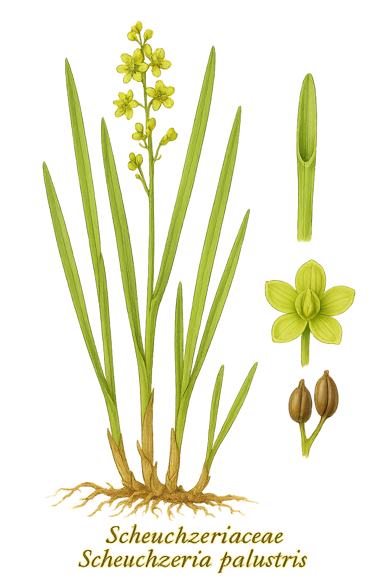

Scheuchzeriaceae
Rannoch-rush Family
The Scheuchzeriaceae is a unique and very small family of monocotyledonous flowering plants, containing only a single genus, Scheuchzeria, and a single species, Scheuchzeria palustris. This perennial herb is adapted to aquatic or semi-aquatic life in acidic bogs and mires across cool temperate and arctic regions of the Northern Hemisphere (circumboreal). It belongs to the order Alismatales.
Overview
Scheuchzeriaceae stands out as a monotypic family, represented solely by Scheuchzeria palustris, commonly known as Rannoch-rush. This plant is a specialist of nutrient-poor, waterlogged, acidic environments such as Sphagnum bogs, mires, and wet tundra. It possesses a wide but scattered circumboreal distribution across North America, Europe, and Asia.
As a member of the Alismatales order, Scheuchzeriaceae is firmly placed within the monocots. This order is notable for containing many families adapted to aquatic or wetland habitats. Scheuchzeria itself is a rhizomatous perennial herb, contributing to the unique flora of peatland ecosystems. Its relatively simple flower structure, particularly the separate carpels, is of evolutionary interest within the monocots.
The family holds little direct economic importance but plays an ecological role in the peat bog communities where it occurs. Its presence can be an indicator of specific acidic wetland conditions.
Quick Facts
- Scientific Name: Scheuchzeriaceae
- Common Name: Rannoch-rush family
- Number of Genera: 1 (Scheuchzeria)
- Number of Species: 1 (Scheuchzeria palustris)
- Distribution: Circumboreal (cool temperate and arctic Northern Hemisphere)
- Evolutionary Group: Monocots - Alismatales
Key Characteristics
Growth Form and Habit
Scheuchzeria palustris is a herbaceous perennial that grows from slender, creeping, horizontal rhizomes, often forming loose colonies. It is strictly an aquatic or semi-aquatic (helophyte) plant of bogs and mires. The erect stems are typically unbranched or sparsely branched, somewhat zigzag, and bear leaves along their length as well as basally.
Leaves
Leaves are alternate, two-ranked (distichous), and distinctly monocot-like. They are linear, narrow, somewhat fleshy or spongy, and possess parallel venation. A key diagnostic feature is the presence of a small membranous flap, the ligule, at the junction of the leaf blade and the sheath. The base of the leaf forms an open sheath that clasps the stem, with a conspicuous pore near the apex of the sheath.
Inflorescence
The inflorescence is a terminal, lax, few-flowered (typically 3-10 flowers) raceme or spike-like structure. Each flower is subtended by a relatively large, leaf-like or membranous bract, which is often greenish or yellowish and persistent.
Flowers
Flowers are small, inconspicuous, and radially symmetrical (actinomorphic). Key floral features include:
- Sex: Bisexual (perfect).
- Perianth: Undifferentiated into calyx and corolla, consisting of 6 small, greenish or yellowish tepals arranged in two whorls of 3. Tepals are persistent, remaining in fruit.
- Androecium: 6 stamens arranged in two whorls, opposite the tepals. Filaments are short; anthers are relatively large, basifixed, and open via longitudinal slits (extrorse).
- Gynoecium: Composed of 3 to 6 (rarely up to 8) carpels that are essentially free (apocarpous) or only very slightly fused at the base. Each carpel contains 1 or 2 ovules and has a short style or nearly sessile stigma. The ovary is superior.
Fruits and Seeds
The fruit is distinctive, consisting of an aggregate of inflated, somewhat leathery or spongy follicles, one developing from each carpel. These follicles diverge as they mature. Each follicle contains 1 or 2 seeds. The buoyant nature of the follicles likely aids in water dispersal.
Chemical Characteristics
The family is not noted for prominent secondary metabolites like alkaloids or tannins found in some other plant groups. Its physiology is adapted to survival in waterlogged, acidic, and nutrient-poor bog conditions.
Field Identification
Identifying Scheuchzeria palustris, the sole member of this family, requires attention to its specific habitat and unique combination of monocot features:
Primary Identification Features
- Habitat: Exclusively found in acidic Sphagnum bogs, mires, peatlands, or wet tundra.
- Habit: A slender, grass-like rhizomatous perennial herb.
- Leaves: Look for linear, alternate leaves with parallel veins, an open sheath at the base, and crucially, a small membranous ligule at the blade-sheath junction. Check for a pore near the sheath apex.
- Inflorescence: Identify the lax, terminal raceme with few (3-10) small, greenish flowers/fruits, each subtended by a prominent bract.
- Flowers/Fruits: Examine flowers for 6 small greenish tepals and 6 stamens. Look for the characteristic fruit composed of 3-6 separate, inflated follicles clustered together.
Secondary Identification Features
- Rhizome: Presence of slender, creeping rhizomes just below the surface (often amongst Sphagnum).
- Stem: Stem often slightly zigzag.
- Tepals: Persistent tepals visible at the base of the developing/mature follicles.
Seasonal Identification Tips
- Spring/Summer: Vegetative growth becomes apparent. Flowering occurs typically from late spring to early summer depending on latitude/altitude.
- Summer/Fall: Developing and mature fruits (follicle clusters) are most conspicuous. The plant often grows intermixed with Sphagnum moss, sedges, and other bog species.
- Winter: Above-ground parts die back, plant survives via rhizomes.
Common Confusion Points
- Juncaginaceae (Arrowgrass family, e.g., Triglochin): Share similar bog/marsh habitats and have linear leaves and flowers in spikes/racemes with 6 tepals/stamens. However, Triglochin species typically have fused carpels forming a single pistil (syncarpous), which matures into a dry fruit that splits into 1-seeded segments, and they lack the distinct ligule of Scheuchzeria.
- Cyperaceae (Sedges) & Juncaceae (Rushes): Many sedges and rushes grow in bogs. Sedges often have triangular stems and flowers reduced to scales (no perianth). Rushes usually have round stems and 6 chaffy tepals, but a single syncarpous pistil forming a capsule fruit. Neither group has the combination of ligule and separate inflated follicles seen in Scheuchzeria.
- Potamogetonaceae (Pondweeds): Some narrow-leaved pondweeds might occur in similar wet areas, but their flowers are typically reduced (often 4 stamens/tepals) and their fruits are distinct achenes or drupelets, not inflated follicles.
Field Guide Quick Reference
Look For:
- Acidic bog/mire/tundra habitat
- Rhizomatous perennial, grass-like
- Linear leaves with ligule & open sheath
- Lax terminal raceme
- Small flowers/fruits with bracts
- 6 greenish tepals, 6 stamens
- 3-6 separate, inflated follicles per fruit cluster
Key Distinctions:
- Ligule present (unlike Juncaginaceae)
- Carpels/Follicles separate (apocarpous)
- Fruit = inflated follicles (not capsule or achenes)
- Perianth present (unlike sedges)
Notable Examples
The Scheuchzeriaceae family is monotypic, containing only one species:

Scheuchzeria palustris
Rannoch-rush
The sole representative of its family, Rannoch-rush is a circumboreal resident of acidic peat bogs. It features slender, somewhat zigzag stems arising from creeping rhizomes, linear leaves with characteristic ligules and open sheaths, and a loose terminal raceme of small, greenish, 6-parted flowers. The fruit is a distinctive aggregate of 3-6 inflated, divergent follicles.
Phylogeny and Classification
Scheuchzeriaceae is classified within the order Alismatales, a significant and relatively early-diverging lineage within the monocots. This order is ecologically diverse but contains a high proportion of families adapted to aquatic or wetland environments. Molecular phylogenetic studies consistently place Scheuchzeriaceae within this order, often showing relationships to families like Juncaginaceae and the broader group including seagrasses and pondweeds.
Its position as a distinct, monotypic family highlights a unique evolutionary trajectory within the Alismatales. The retention of separate carpels (apocarpy) is considered a relatively ancestral trait within angiosperms, and while present in some other early-diverging monocot lineages (including some Alismatales), it is uncommon compared to the fused carpels (syncarpy) found in the majority of monocots.
Position in Plant Phylogeny
- Kingdom: Plantae
- Clade: Angiosperms (Flowering plants)
- Clade: Monocots
- Order: Alismatales
- Family: Scheuchzeriaceae
Evolutionary Significance
The Scheuchzeriaceae family, despite its small size, is evolutionarily significant for:
- Representing a Distinct Lineage: It highlights the diversity within the early-diverging monocot order Alismatales.
- Retention of Apocarpy: The presence of separate or nearly separate carpels is an important character state, potentially ancestral within monocots.
- Habitat Specialization: Its strict adaptation to nutrient-poor, acidic bog environments showcases evolutionary specialization.
- Unique Feature Combination: The combination of ligulate leaves, specific floral structure (6 tepals/stamens, apocarpy), and inflated follicle fruits distinguishes it clearly from related families.